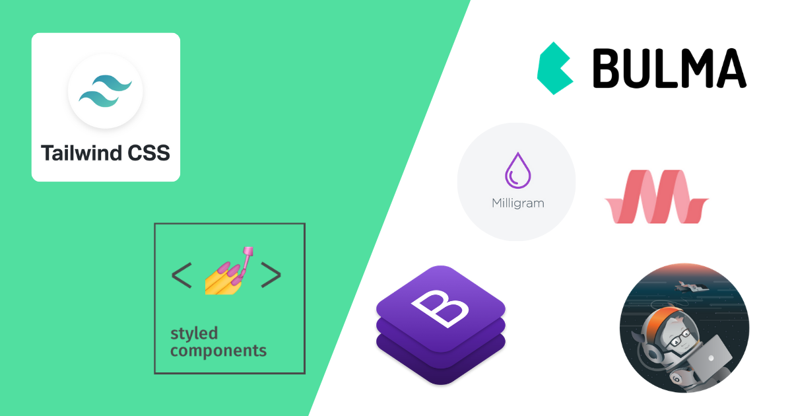

Es una biblioteca de estilos base y genéricos, los cuales sirven de utilidad a la hora de diseñar una página web.
Estos se pueden clasificar en dos tipos: Los Framework Multipropósito, los cuales nos ofrecen un conjunto de utilidades que nos servira para variados aspectos a la hora del desarrollo web.
Y los Framework con Propósito Específico, siendo estos encargados de ofrecernos herramientas para acciones específicas, como por ejemplo, hay frameworks orientados a la tipografia, mientras que hay otros que se dedican a el desarrollo de rejillas.
No hay mucho que decir acerca de estos, solo que son una buena base para poder iniciar a diseñar la página web, viniendo con algunas ventajas e inconvenientes claro esta.
-Si el framework fue elaborado y desarrollado de excelente forma podra proporcionar una forma fácil y mas rápida de elaborar una página web
-Podra asegurarnos que el diseño funcionara de forma exitosa y sin problemas en una amplia gama de navegadores
-Nos ofrece un código que tendremos por seguro que cumple ciertas normas estándar
-Se asegura cierto grado de confianza en la eficacica de las herramientas obtenidas; se supone que la utilidad debio haberse probado a su debida forma, asegurandonos que no habra errores
Estos son algunos problemas o detalles a tener en cuenta al usar un Framework CSS
-Puedes recibir código del Framework que realmente no necesitaras o se va a usar en el diseño web que tienes concretado, esto ocasionara un incremento innecesario en el consumo del bando de ancha y del tiempo de descarga de los archivos y/o contenido que se este introduciendo.
-Menos control en la solución de un inconveniente en la visualuzación de la página web, si no se puede solucionar mediante las herramientas ofrecidas, no sera facil arreglar algún efecto indeseado que haya ocurrido.
-Al estar usando un codigo pre-definido, nos estamos limitando a las posibilidades de diseños que podamos crear, solo podremos usar lo que nos ofrece.
Estos son algunos ejemplos de Frameworks CSS que se pueden encontrar